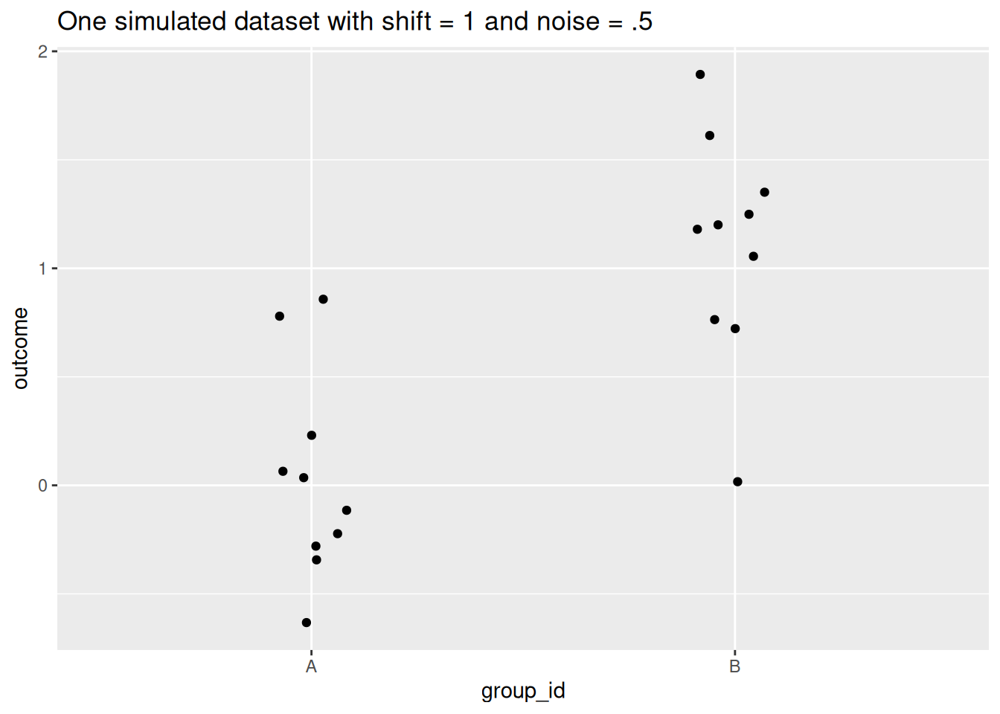
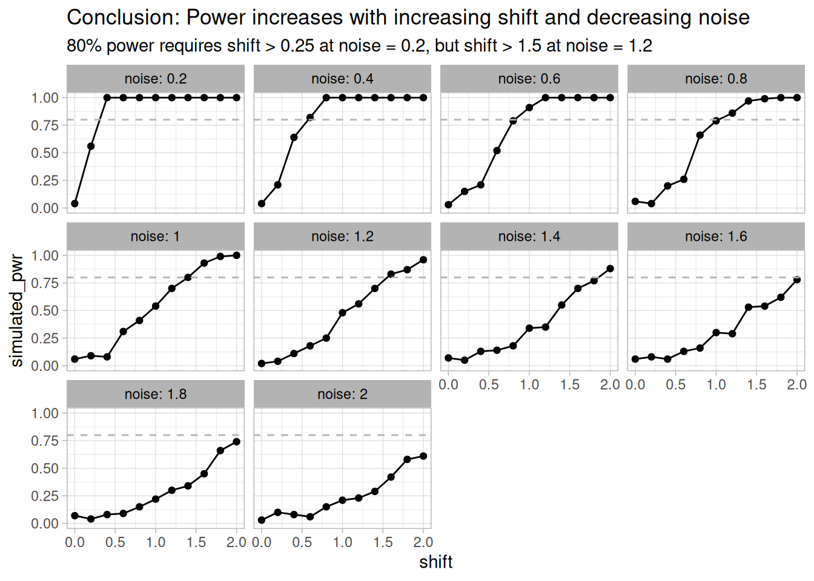
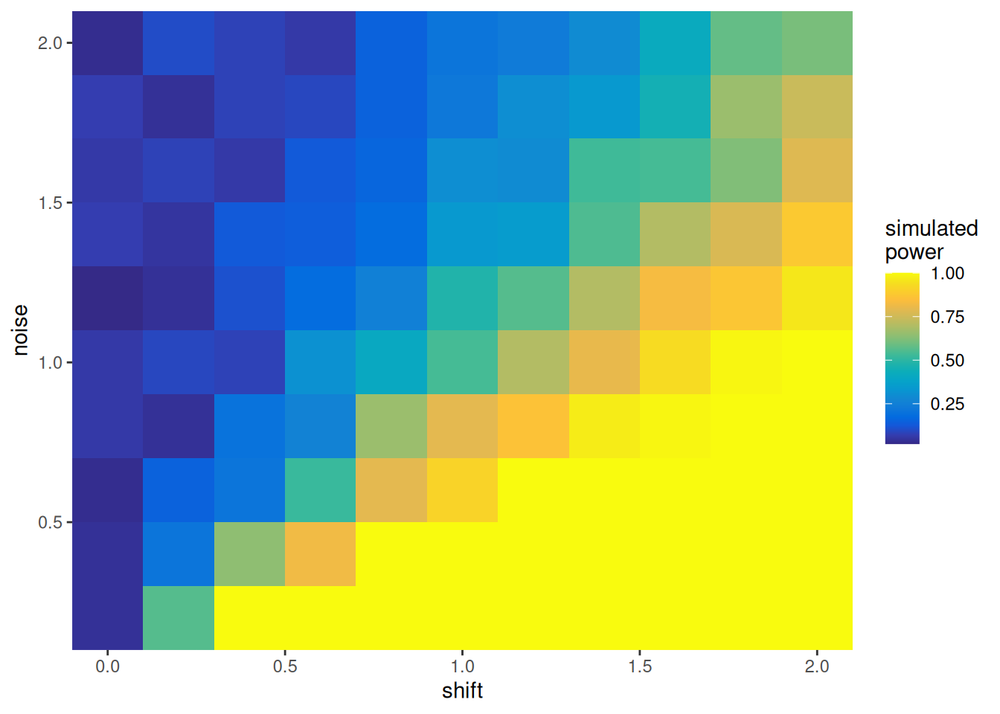

library(tidyverse)
sim_once = function(shift, noise) {
tibble(group_id = c(rep('A', 10),
rep('B', 10)),
outcome = c(rnorm(10, mean = 0, sd = noise),
rnorm(10, mean = shift, sd = noise)))
}A walkthrough on how to perform a simulation-based power analysis.
Motivation
I was recently asked about how to perform a power analysis and was reminded of an old power analysis skeleton script I wrote when I was in graduate school. I thought I’d share it here.
This is for simulation-based power analysis as opposed to those based on analytic formulas. Simulation-based analyses have five main steps:
- Simulate a dataset with specified parameters. These parameters can include effect sizes, sample sizes, noise levels, correlations, etc.
- Run a decision procedure to decide if you could hypothetically detect a simulated effect in your synthetic dataset. This is commonly a statistical test followed by some binary threshold.
- Repeat the previous steps many times at each point on a grid of simulation parameters.
- At each grid point, compute the proportion of simulated datasets where the simulated effect was detected. This is the estimated power at each grid point.
- Plot curves and/or surfaces showing how the estimated power changes as your simulation parameters change.
Simulation-based power analyses offer a number of advantages:
- Analytic power formulas are generally constrained to circumstances satisfying various statistical assumptions that aren’t always realistic.
- They’re likewise generally restricted to specific decision procedures with well-characterized asymptotic behavior.
- Meanwhile, simulations can be as complicated and realistic as your programming skill/patience allows, and you can use any test / ML tool / arcane incantation you care to as your decision procedure.
- Simulations are cool.
They come with some disadvantages as well:
- They necessitate that you can simulate data fairly and accurately. Programming realistic simulations can be an infinite rabbit-hole of complexity. Reality is complex, and it can be difficult to assess what factors are impactful or negligible.
- Your simulations are subject to criticism. You may encounter reviewers whose simulation standards are difficult to satisfy.
- Computational cost can be a concern.
- Monte Carlo error
Simulate a dataset
We start by simulating a single dataset. This is by far the most important step in the process. For the sake of demonstration I’m going to be simulating a very simple example featuring:
- two normally distributed groups
- with identical variance
- and a mean shift in the second group.
The goal is to estimate the ability to detect the shift in the two groups with a t-test as a function of the shift (the difference in means) and noise parameters.
In practice, this simulation function is the bulk of the cognitive work. Do everything you can to make it as realistic as possible.
Here’s one example simulation with a shift of 1 and noise set to 0.5:
set.seed(123)
first_sim = sim_once(1, .5)
first_sim |>
ggplot(aes(group_id, outcome)) +
geom_jitter(height = 0, width = .1) +
labs(title = "One simulated dataset with shift = 1 and noise = .5")
Run a decision procedure
Now you need to decide how you decide whether you’ve “detected” a simulated effect. In this case, we’ll use a t-test and the infamous p < 0.05 decision threshold:
run_test = function(iter_df) {
pval = t.test(outcome ~ group_id,
data = iter_df)$p.value
pval < .05
}On our first simulated dataset from above, the t-test detects the shift as you’d expect:
run_test(first_sim)[1] TRUEIn practice it can also be helpful to have the test function report out other information like the test statistic and p-value, but here we just report the result of the decision procedure to keep it simple.
Repeat
Now just do that over a grid of simulation parameters, making sure to run many simulations at each grid point. Here we’ll have the shift value range from 0 to 2 and the noise range from 0.2 to 2, using grid points spaced by 0.2 in both cases. We’ll do 100 iterations at each grid point. We set up the full grid using the handy expand_grid() function from tidyr:
(sim_df = expand_grid(shift = seq( 0, 2, by = 0.2),
noise = seq(.2, 2, by = 0.2),
iteration = 1:100))# A tibble: 11,000 × 3
shift noise iteration
<dbl> <dbl> <int>
1 0 0.2 1
2 0 0.2 2
3 0 0.2 3
4 0 0.2 4
5 0 0.2 5
6 0 0.2 6
7 0 0.2 7
8 0 0.2 8
9 0 0.2 9
10 0 0.2 10
# ℹ 10,990 more rowsAdd on the column of simulated datasets:
(sim_df = sim_df |>
mutate(iter_sim = map2(shift, noise,
sim_once,
.progress = interactive())))# A tibble: 11,000 × 4
shift noise iteration iter_sim
<dbl> <dbl> <int> <list>
1 0 0.2 1 <tibble [20 × 2]>
2 0 0.2 2 <tibble [20 × 2]>
3 0 0.2 3 <tibble [20 × 2]>
4 0 0.2 4 <tibble [20 × 2]>
5 0 0.2 5 <tibble [20 × 2]>
6 0 0.2 6 <tibble [20 × 2]>
7 0 0.2 7 <tibble [20 × 2]>
8 0 0.2 8 <tibble [20 × 2]>
9 0 0.2 9 <tibble [20 × 2]>
10 0 0.2 10 <tibble [20 × 2]>
# ℹ 10,990 more rowsAnd run the decision procedure on each simulated dataset:
(sim_df = sim_df |>
mutate(detected = map_lgl(iter_sim, run_test,
.progress = interactive())))# A tibble: 11,000 × 5
shift noise iteration iter_sim detected
<dbl> <dbl> <int> <list> <lgl>
1 0 0.2 1 <tibble [20 × 2]> FALSE
2 0 0.2 2 <tibble [20 × 2]> FALSE
3 0 0.2 3 <tibble [20 × 2]> FALSE
4 0 0.2 4 <tibble [20 × 2]> FALSE
5 0 0.2 5 <tibble [20 × 2]> FALSE
6 0 0.2 6 <tibble [20 × 2]> FALSE
7 0 0.2 7 <tibble [20 × 2]> FALSE
8 0 0.2 8 <tibble [20 × 2]> FALSE
9 0 0.2 9 <tibble [20 × 2]> FALSE
10 0 0.2 10 <tibble [20 × 2]> FALSE
# ℹ 10,990 more rowsCompute estimated power
To calculate our simulated power, we compute the proportion of iterations at each grid point where the shift is detected:
(pwr_df = sim_df |>
summarise(.by = c(shift, noise),
simulated_pwr = mean(detected)))# A tibble: 110 × 3
shift noise simulated_pwr
<dbl> <dbl> <dbl>
1 0 0.2 0.04
2 0 0.4 0.04
3 0 0.6 0.03
4 0 0.8 0.06
5 0 1 0.06
6 0 1.2 0.02
7 0 1.4 0.07
8 0 1.6 0.06
9 0 1.8 0.07
10 0 2 0.03
# ℹ 100 more rowsNote that in the special case of shift = 0, there isn’t any simulated effect to detect in the first place. So that subset of simulations lets us estimate the false positive rate across our other simulation parameters. You can see that in this case it hovers around 0.05. You can of course calculate other binary classification statistics like PPV and so on as well, but we won’t get into that here.
Visualize
Even with our very modest simulation grid in this example, we ended up with 110 grid points. It’s helpful to present the results visually. This is most commonly done with power curves, showing one parameter of interest varying on the x-axis, simulated power on the y-axis, and the remaining simulation parameters separated out on facets. So here we’ll put shift on the x-axis and noise across facets.
It’s common also to put a dotted line at an “acceptable” power level of 0.8. The thinking behind 80% is basically “if you don’t have a good chance of detecting the effect, you probably shouldn’t run the experiment in the first place”. 80% is a decent definition for “good chance”.
ggplot(pwr_df, aes(shift, simulated_pwr)) +
geom_point() +
geom_line() +
geom_hline(yintercept = .8, # a common
lty = 2,
color = 'grey70') +
facet_wrap('noise', labeller = label_both) +
labs(title = 'Conclusion: Power increases with increasing shift and decreasing noise',
subtitle = '80% power requires shift > 0.25 at noise = 0.2, but shift > 1.5 at noise = 1.2') +
theme_light() +
ylim(c(0,1)) +
theme(strip.text = element_text(color = 'black'))
You read the plot like so: “If the noise is X (*go to the X facet*) and the shift is Y (*go to the horizontal position for Y*), the approximate power of the t-test to detect the shift is the height of the line.”
You can get a lot of practical conclusions from a plot like this:
- You can reliably detect very small shifts down to ~0.3 at low noise levels like 0.2.
- At
noise = 2you would need huge shifts beyond the range considered by your parameter grid. - The curves aren’t perfectly smooth because we only ran 100 simulations at each grid point.
And so on.
While curves are very easy to read, if you have a lot of simulation parameters you can make a more compact plot by using color for simulated power. That way you can leave facets for additional simulation parameters (not done here, but you could include varying sample sizes, group-wise noise levels, etc):
ggplot(pwr_df, aes(shift, noise)) +
geom_tile(aes(fill = simulated_pwr)) +
coord_cartesian(expand = FALSE) +
scale_fill_gradientn(colors = pals::parula(200)) +
labs(fill = "simulated\npower")
You can see that anything orange or above should be acceptable.
Practical tips
Some other practical tips:
Check the outer limits
Test the outer limits of your simulation parameter grid. So in this case we would start by examining / testing with:
expand_grid(shift = c(0, 2), noise = c(.2, 2))# A tibble: 4 × 2
shift noise
<dbl> <dbl>
1 0 0.2
2 0 2
3 2 0.2
4 2 2 First, you’ll be able to check whether these are reasonable outer limits or if you want to push them further.
Second, you’ll be able assess how long it takes to run your decision procedure and get a sense of whether you’ll be limited by your computational budget. The t-test we used here is basically instant, but that’s not always the case. If your decision procedure instead uses a fancy ML method that takes a day to assess 100 simulations, suddenly you’re looking at almost four months. You may need to cut down the total number of simulations by doing fewer simulations per grid point or reducing the granularity of the parameter grid.
SAVE!
SAVE! your results as you generate them. Both the simulated datasets and the outputs from the decision procedure. Even if you’re very careful about setting the RNG seed, sometimes a subtle change in a dependency or something can throw off the simulation code and make it difficult to reproduce your simulations. It’s better, faster, and easier to just save the simulated datasets. Later on you can re-use them with updated/alternate decision procedures if necessary. If you want to be really thorough about reproducibility, use renv and/or Docker to nail down all the software you’re using.
Performance
I wrote the script to be readable and extensible, and as such it doesn’t accomplish the very simple task of computing t-test p-values in the most performant way. In practice, parameter grids can become combinatorially huge, so while it’s quite easy to parallelize over them, you’ll usually end up wanting to make them run faster. This is most easily done with vectorization and fast aggregation functions.
For instance, here I re-do the above simulation but instead of keeping everything in nested list columns, I A) do everything in one tall data frame, B) calculate the p-value manually from only the bare essential statistics (instead of using t.test() which has overhead) and C) use collapse for fast aggregations. It runs in 62ms, about 120 times faster than the basic version above.
library(fastverse)
expand_grid(i = 1:100,
j = 1:20,
grp = c(0, 1),
m = seq(0, 2, by = .2),
s = seq(.2, 2, by = .2)) |>
mtt(x = rnorm(440e3, mean = m*grp, sd = s)) |>
gby(i, m, s, grp) |>
smr(xm = fmean(x),
xs = fsd(x) / sqrt(20)) |>
gby(i, m, s) |>
smr(dx = xm[1] - xm[2],
sdx = sqrt(xs[1]^2 + xs[2]^2),
s1 = xs[1], s2 = xs[2]) |>
mtt(t = dx / sdx,
nu = sdx^4 / ((1/19) * (s1^4 + s2^4)), # It's Welch's t-test specifically
p = pt(t, nu, lower.tail = FALSE))Script
This is the original script, with much of the same information as above in the comments. Feel free to use it however you like.
Code
power_analysis_skeleton.R
# This is a generalizable skeleton for simulation based power analyses.
library(tidyverse)
# Core simulation functions -----------------------------------------------
# The first function here defines how we're simulating data. As an example I
# simulate the power to detect differences between two normally distributed
# groups with two varying parameters: mean shift and sd. The
# pwr package actually has functionality for calculating the power of this
# situation analytically, but this is just for demonstration. In practice you'd
# be simulating power when you have a more complicated data structure and/or
# statistical model that doesn't come with an analytical power formula.
# Other parameters that one might change: strength of a linear association,
# number of measurements per group, noise levels, correlated covariates, etc.
sim_once = function(shift, noise) {
# Return a dataframe of observations
# Realistic simulations are critical to the success of this process.
tibble(group_id = c(rep('A', 10),
rep('B', 10)),
outcome = c(rnorm(10, mean = 0, sd = noise),
rnorm(10, mean = shift, sd = noise)))
}
sim_once(1, .5) |>
ggplot(aes(group_id, outcome)) +
geom_boxplot(width = .3) +
geom_jitter(height = 0, width = .1) +
labs(title = "One simulated dataset with shift = 1 and noise = .5")
# Set up parameter value grid ---------------------------------------------
# I'm going to have shift take 10 values from 0 to 2 and noise take 10
# values from .2 to 2. I'm only doing 100 simulations of each grid point
# (10x10x100 = 1e5 simulations). 1000 at each point would be preferable. It's
# easy to see how additional varying parameters can rapidly increase the
# computational cost. You also need to ensure that your grid covers a range
# between A) where detecting a difference is impossible to B) the smallest
# parameter values where the power is essentially 100% (I haven't done that in
# this case). This command sets up the grid.
set.seed(42) # To ensure simulations are reproducible
sim_df = expand_grid(shift = seq( 0, 2, by = .2),
noise = seq(.2, 2, by = .2),
i = 1:100)
# Simulate at each grid point ---------------------------------------------
# Here we run the simulations for each grid point.
sim_df = sim_df |>
mutate(point_sims = map2(shift, noise,
sim_once,
.progress = interactive()))
# save(sim_df) # is probably wise here.
# Analyze iteration results -----------------------------------------------
# Now we run whatever statistical processing / test we plan to use on each
# iteration. I'm just going to pretend it's a t-test between the two groups, and
# immediately extract the p-value, but it could be a lm() or something fancier,
# and it might be helpful to separate out the test results and summary
# statistics into separate columns.
# The t-test in this example is quite fast, but if you're testing the efficacy
# of Bayesian/ML methods that are computationally expensive, this step can be
# worth parallelizing.
run_iter_test = function(iter_sim) {
pval = t.test(outcome ~ group_id,
data = iter_sim)$p.value
pval < .05
}
sim_df = sim_df |>
mutate(detected = map_lgl(point_sims,
run_iter_test,
.progress = interactive()))
# save() the results here too...
# Summarise grid points ---------------------------------------------------
# Here we apply some threshold that we would use in practice to say we detected
# a difference. p < .05 for this example. Then we compute the fraction of
# iterations at each grid point that fall below that threshold. That's our power
# (except when the null hypothesis is true, in which case it's the false
# positive rate).
summary_df = sim_df |>
mutate(below_threshold = detected) |>
group_by() |>
summarise(.by = c(shift, noise),
simulated_power = mean(detected)) # mean of a logical vector = proportion that is TRUE
# Visualize ---------------------------------------------------------------
# Here we create curves showing the effect on the simulated power as a function
# of the varying parameters. I have one subplot for each noise value and
# shift on the x-axis, but the visualization will need to be adapted to the
# structure of the simulation. More simulations per grid point and a denser grid
# will yield smoother curves, at the cost of more computation.
summary_df |>
ggplot(aes(shift, simulated_power)) +
geom_point() +
geom_line() +
geom_hline(yintercept = .8, # a common
lty = 2,
color = 'grey70') +
facet_wrap('noise', labeller = label_both) +
labs(title = 'Conclusion: Power increases with increasing shift and decreasing noise',
subtitle = '80% power requires shift > 0.25 at noise = 0.2, but shift > 1.5 at noise = 1.2') +
theme_light() +
ylim(c(0,1)) +
theme(strip.text = element_text(color = 'black'))
# It can be more compact to plot the results as a colored surface:
summary_df |>
ggplot(aes(shift, noise)) +
geom_tile(aes(fill = simulated_power)) +
coord_cartesian(expand = FALSE) +
scale_fill_gradientn(colors = pals::parula(200)) +
labs(fill = "simulated\npower")
# Improve performance -----------------------------------------------------
# Simulations can be computationally expensive and worth optimizing for
# performance. Here's an example of a faster version of what we did above:
library(fastverse)
expand_grid(i = 1:100,
j = 1:20,
grp = c(0, 1),
m = seq(0, 2, by = .2),
s = seq(.2, 2, by = .2)) |>
mtt(x = rnorm(440e3, mean = m*grp, sd = s)) |>
gby(i, m, s, grp) |>
smr(xm = fmean(x),
xs = fsd(x) / sqrt(20)) |>
gby(i, m, s) |>
smr(dx = xm[1] - xm[2],
sdx = sqrt(xs[1]^2 + xs[2]^2),
s1 = xs[1], s2 = xs[2]) |>
mtt(t = dx / sdx,
nu = sdx^4 / ((1/19) * (s1^4 + s2^4)), # It's Welch's t-test specifically
p = pt(t, nu, lower.tail = FALSE))